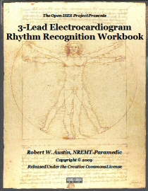

Emergency Medical Services
Training Project
"Therefore in medicine we ought to know
the causes of sickness and health."
Avicenna

- Menu
- EMS Medical Training
- Cardiology Review
- ECG Workbook
- Lesson Plans
- Public Training
- TQM for Emergency Services
- SRCSA
- Resources
- Learning Content Management Systems
- Authoring Tools
- Wiki
- Forums
- Store
- Projects
- Agency Personnel & Training Database
- eBook Writer
- EMS Training
- PAD Program Manager
- Tickets CAD
- TQM for Emergency Services

Available in Open Document and Adobe Acrobat Formats!
 Our most recent release in the Medical Training Project series is an ECG review workbook. This initial release has 40 different rhythm strips, with 10 of the strips including scenarios. There are two versions of the workbook (a Student version and an Instructor version) and is currently available in two formats (OpenDocument & Adobe Acrobat).
Open Document Version Available
We are pleased to announce the release of the OpenDocument format of the workbook. The
original version was over 70MB in size, and was due to the graphic content of the
booklet. We have been working on ways to reduce the size of the original graphics in
the workbook as well as the overall size of the workbook. We are pleased to report that
we have gotten the size down to less than 20MB.
Future releases are planned that include more strips and more instructional material. A SCORM formatted release is also in the works to allow the material to be used in a Learning Content Management System (LCMS) such as Moodle or Claroline.
01 June 2009
Download Instructor Workbook - Acrobat |
Download Instructor Workbook - Open Document
Download Student Workbook - Acrobat |
Download Student Workbook - Open Document
ECG Review Available in SCORM Format
For Use with Learning Content Management Systems Such as Moodle
Update
This is our latest release of training materials in the SCORM format. This format allows
you to import the project into a Learning Content Management System (LCMS) such as
Moodle.
This new release includes 20 ECG pattern recognition exercises that are not yet included
in the workbook. Part 2 of this release does include the same material as in the 3-Lead
ECG Workbook above, and can be used as a companion to the book. All questions are in the
same order, so you can use the Instructor's Guide with this version as well.
The screen shots to the right show examples of how the SCORM format version of the ECG Review appears when used in Moodle and Firefox.The top one is the opening screen. The second screen displays a typical ECG review question.
eXe Format Available
We have also made available the source files used to create the ECG Review project. The source
files are for use with the eXe Learning
authoring tool. This allows you the ability to go in and make any changes you desire to the
original project.
05 June 2010
Download SCORM format |
Download eXe Source Files